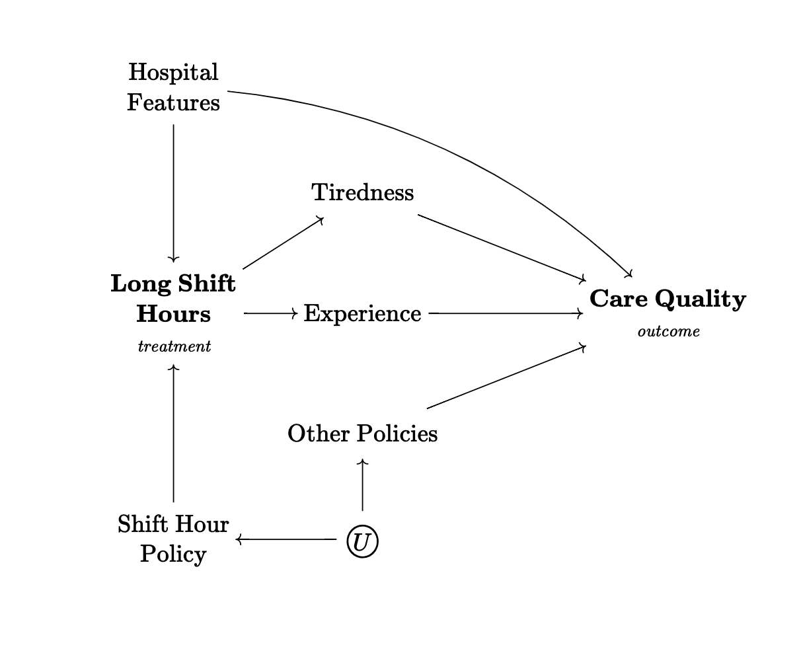
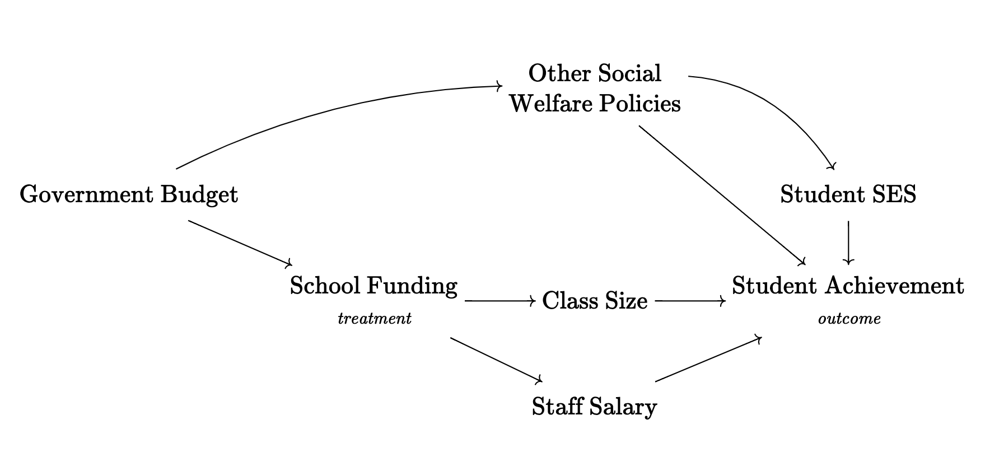
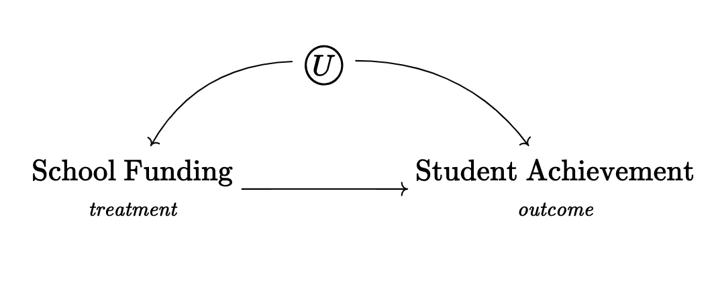
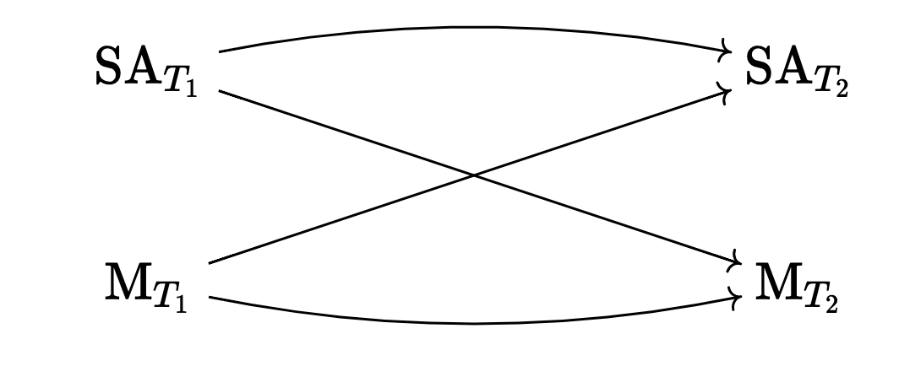

Packages et al.
library(tidyverse)
theme_set(theme_light(base_family = "Optima"))library(tidyverse)
theme_set(theme_light(base_family = "Optima"))| Group (\(T\)) | \(E[Y^1]\) | \(E[Y^0]\) |
|---|---|---|
| \(T = 1\) | 10,000 | 5,000 |
| \(T = 0\) | 10,000 | 5,000 |
The missing cells are like this because of the ignorability assumption in a perfectly executed experiment.
ATE: 5,000
Draw a causal diagram for the research question “do long shift hours make doctors give lower-quality care?” that incorporates the following features (and only the following features):
Long shift hours affect both how tired doctors are, and how much experience they have, both of which affect the quality of care
How long shifts are is often decided by the hospital the doctor works at. There are plenty of other things about a given hospital that also affect the quality of care, like its funding level, how crowded it is, and so on
New policies that reduce shift times may be implemented at the same time (with the timing determined by some unobservable change in policy preferences) as other policies that also attempt to improve the quality of care

Consider this research question: Does the funding level of public schools affect student achievement for students in your country?
What is the treatment and what is the outcome of interest?
Outcome: student achievement. Treatment: funding level.
Write down a list of relevant variables.
Relevant variables: government budget, student SES, class size, staff salary, other social welfare policies.
Which of the variables in your list in part b are causes of both treatment and outcome?
Government budget
Why might we want to pay extra attention to the variables listed in part c?
Because they are confounders
Draw a causal diagram of the variables listed in part b.

Simplify the diagram from part e.

How can a causal diagram be modified so as to avoid cyclic relationships?
Consider the diagram below. It depicts a cyclical relationship between student achievement and motivation. If students achieve more (i.e., score well on exams), then their motivation goes up, and if their motivation goes up, they achieve more. Change the diagram so that the relationship is not cyclic anymore.
\[ \text{Student Achievement} \longleftrightarrow \text{Motivation} \]
Possible answer:

Assuming that a path has no colliders on it, what is the difference between a path being Open and Closed?
At least one of the variables in the path has been adjusted for—i.e., variation is removed or “controlled” for.
Note. Remember that you’ll always sound smarter if you say “adjusted” instead of “controlled” in the context of regression with observational data.
Consider the below generic causal diagram.

List every path from X to Y.
\[ \begin{align} &1. &&X \to A \to Y, \\ &2. &&X \leftarrow B \to Y, \\ &3. &&X \leftarrow B \leftarrow D \to Y, \\ &4. &&X \to C \leftarrow D \to Y, \\ &5. &&X \to C \leftarrow D \to B \to Y \end{align} \]
Which of the paths are front-door paths?
1
Which of the paths are open back-door paths?
2 and 3
What variables must be controlled for in order to identify the effect of X on Y? (only list what must be controlled for, not anything that additionally could be controlled for).
\(B\)
Which of the following describes a causal path where all the arrows point away from the treatment?
Open Path
Closed Path
Front Door Path (this one)
Back Door Path
Consider the figure below, which depicts the relationship between teaching quality, number of publications (e.g., articles, books), and popularity among scholars and students in a population of professors.

What type of variable is Popularity in one path on this diagram?
Discuss what would happen if you controlled for Popularity.
Popularity is a collider variable. If we “control” (remove variation) for Popularity we will artificially create a negative association between Teaching Quality and Number of Publications
Go to the app Steve showed us in class.
https://cbdrh.shinyapps.io/daggle/
Spend some time noodling around with it and upload screenshots with the right answer for three DAGs with 4, 6, and 8 nodes each. Set the complexity to “difficult.”
Grading based is conditional on screenshots.
House of DAG Simulation.
I’ve included a little script with a couple of functions meant to illustrate the connection between DAGs and the estimands we saw in class (ATE, ATT, ATC).
Save it to your project and load it using the source() function.
You should see a function called hod_simulation() which creates a dataset that corresponds to the following DAG:

The hod_simulation() function has the following arguments:
N: Sample Size
rho: The correlation between \(S\) and \(X\), it accepts values between -1 and 1.
Bt: this is the treatment effect.
Bx: this is the direct effect of \(X\) on \(Y\)
This is the dataset it creates:
source("hod_simulation_functions.R")Standard Error ~ 0.322
Power ~ 0.873# A tibble: 4 × 3
variable sd mean
<chr> <dbl> <dbl>
1 y 5.23 1.49
2 t 0.500 0.503
3 x 1.03 0.979
4 s 0.990 1.00 set.seed(12345) ## include this so that grading is easier for me.
d <- hod_simulation(N = 1e3, Bt = 2, Bx = 4, rho = 0.8)Standard Error ~ 0.405
Power ~ 0.999# A tibble: 4 × 3
variable sd mean
<chr> <dbl> <dbl>
1 y 6.75 4.98
2 t 0.500 0.52
3 x 1.02 1.00
4 s 1.01 1.02Note. Ignore the “Standard Error” and “Power” messages.
glimpse(d)Rows: 1,000
Columns: 6
$ y0 <dbl> 3.0258462, 5.2008689, -0.3510375, -2.7643240, -3.7947830, 12.879242…
$ y1 <dbl> 5.0258462, 7.2008689, 1.6489625, -0.7643240, -1.7947830, 14.8792426…
$ t <int> 1, 1, 1, 1, 0, 0, 0, 0, 1, 0, 1, 0, 1, 0, 1, 1, 1, 1, 0, 1, 1, 0, 1…
$ y <dbl> 5.0258462, 7.2008689, 1.6489625, -0.7643240, -3.7947830, 12.8792426…
$ x <dbl> 1.89642215, 0.54549787, -0.35506814, 1.03476207, 0.05065330, 2.5734…
$ s <dbl> 1.84099574, 0.69942604, 0.72890759, 1.44006399, 0.33470650, 1.70875…Without looking at the results just yet… do you think the naive estimate will be larger or smaller than the “real” estimate ( \(ATE = 2\) )?
The results should be larger because people who get the treatment should also a higher \(X\), and the effect of \(X\) is positive.
Check your answer. What are the results given by the naive estimator?
d |>
group_by(t) |>
summarize(across(c(y0, y1), mean))# A tibble: 2 × 3
t y0 y1
<int> <dbl> <dbl>
1 0 2.00 4.00
2 1 5.72 7.72mean(d$y[d$t == 1]) - mean(d$y[d$t == 0])[1] 5.718145Re-do this but set rho to -0.8 (so that \(S\) and \(X\) are now negatively correlated).
set.seed(12345)
d <- hod_simulation(N = 1e3, Bt = 2, Bx = 4, rho = -0.8)Standard Error ~ 0.405
Power ~ 0.999Joining with `by = join_by(variable)`# A tibble: 4 × 3
variable sd mean
<chr> <dbl> <dbl>
1 y 5.96 4.88
2 t 0.500 0.512
3 x 0.995 0.983
4 s 0.984 1.02 d |>
group_by(t) |>
summarize(across(c(y0, y1), mean))# A tibble: 2 × 3
t y0 y1
<int> <dbl> <dbl>
1 0 5.92 7.92
2 1 1.88 3.88mean(d$y[d$t == 1]) - mean(d$y[d$t == 0])[1] -2.043275Note. You should have been able to figure out that the “naive estimator” (difference between groups) was going to be biased in the opposite side (i.e., smaller or even negative).
Take the dataset d created in the previous question and modify it so that the treatment is now randomized (this will destroy the path between \(S\) and \(T\)).
d$t <- sample(d$t)
d$y <- ifelse(as.logical(d$t), d$y1, d$y0)Without looking at the results just yet… do you think the naive estimate will be larger or smaller than the “real” estimate ( \(ATE = 2\) )?
The answers should be roughly the same as the “real” estimate because we have effectively destroyed the backdoor path via the randomization of the treatment. But there’s still margin for sampling error, so we should also look at the standard error.
Check your answer. What are the results given by the naive estimator?
mean(d$y[d$t == 1]) - mean(d$y[d$t == 0])[1] 1.929149Use lm() to predict the newly created y from t. What are the coefficient values?
lm(y ~ t, data = d) |>
broom::tidy(conf.int = TRUE) ## 95% confidence interval# A tibble: 2 × 7
term estimate std.error statistic p.value conf.low conf.high
<chr> <dbl> <dbl> <dbl> <dbl> <dbl> <dbl>
1 (Intercept) 3.89 0.281 13.8 6.95e-40 3.34 4.44
2 t 1.93 0.393 4.91 1.08e- 6 1.16 2.70Use lm() to predict the newly created y from t and x. What are the coefficient values?
lm(y ~ t + x, data = d) |>
broom::tidy(conf.int = TRUE) ## 95% confidence interval# A tibble: 3 × 7
term estimate std.error statistic p.value conf.low conf.high
<chr> <dbl> <dbl> <dbl> <dbl> <dbl> <dbl>
1 (Intercept) -0.0981 0.262 -0.374 7.08e- 1 -0.612 0.416
2 t 1.99 0.301 6.62 5.87e- 11 1.40 2.58
3 x 4.02 0.151 26.6 1.76e-118 3.73 4.32 Note that in both of these cases the estimate was correctly “identified” (from a causal inference perspective) but the second answer is closer to the “truth.” Look at the standard errors, they are smaller!